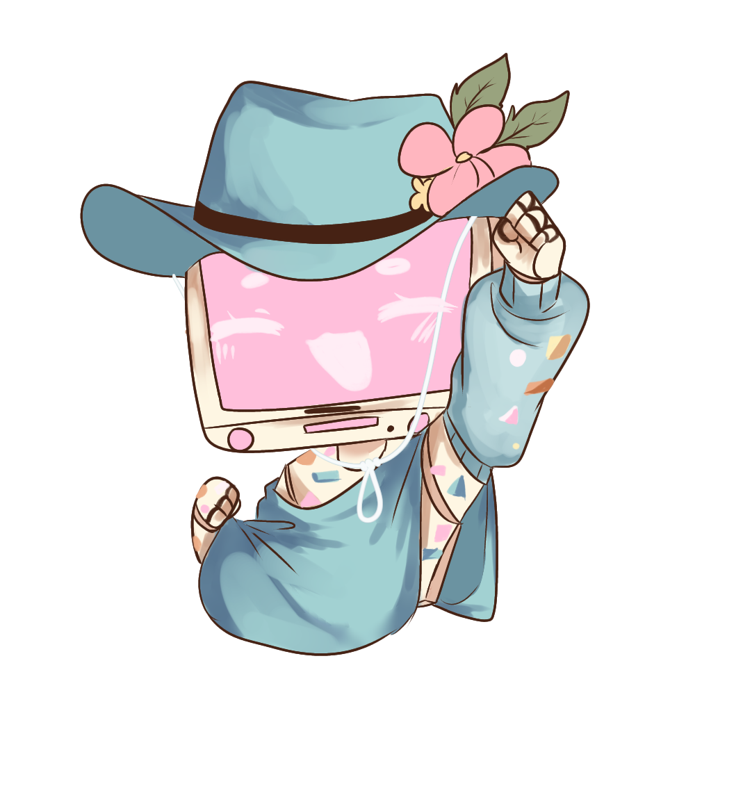

This is the mobile directory.
This just exists so that if there is anything thats unacsessable on mobile can be reached here!
I would rencomend that you view my website on a desktop to get the full "experience"
(you might be missing some fun stuff!)